Les 3 étapes d'une synthèse
- Étape 1 — Transformation des réactifs en produits. C'est l'objet principal de cette séquence : obtenir un rendement maximum en un temps le plus court possible.
- Étape 2 — Extraction / purification : isolement du produit synthétisé, séparé des autres espèces présentes dans le milieu (réactifs en excès, solvant, sous-produits, catalyseur…) pour obtenir un produit brut.
- Étape 3 — Identification : contrôle de la pureté du produit obtenu.
a. Cas d'un produit solide
- Filtration sous vide, avec un montage Büchner (trompe à eau + fiole à vide).
- Lavage avec un solvant glacé (toujours sous Büchner), pour limiter la perte par re-dissolution.
- Séchage du solide obtenu.
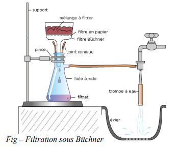
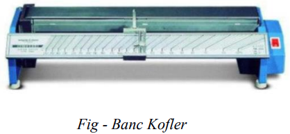
b. Cas d'un produit liquide
- Extraction liquide-liquide (extraction par solvant) : on utilise un solvant extracteur, non miscible avec le solvant initial, dans lequel l'espèce à extraire est plus soluble. Les deux phases sont séparées à l'aide d'une ampoule à décanter. Ce solvant doit être volatil pour être éliminé facilement ensuite.
- Séchage : élimination des traces d'eau à l'aide d'un solide anhydre.
- Élimination du solvant par vaporisation (évaporateur rotatif).
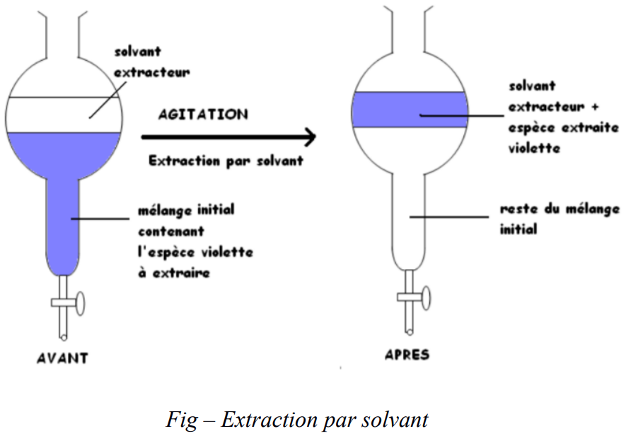
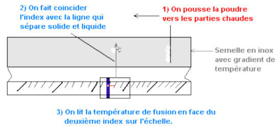
Identification d'une espèce chimique
Pour identifier une espèce chimique, on mesure l'une de ses caractéristiques physiques et on la compare aux valeurs de tables de données. Les méthodes dépendent de l'état physique du produit :
- Solide : mesure de la température de fusion avec un banc Kofler.
- Liquide : mesure de la densité, de la température d'ébullition, de l'indice de réfraction.
- Solide ou liquide : les méthodes chromatographiques et spectroscopiques conviennent aux deux états.
Définition du rendement
Le rendement r d'une synthèse est le quotient entre la quantité de matière finale nf de produit obtenu et la quantité maximale nmax qu'on peut produire à partir des réactifs en présence (en supposant la réaction totale).
① Réactif en excès
Introduire un réactif en excès déplace l'équilibre chimique dans le sens direct : le réactif limitant est davantage consommé, ce qui augmente nf et donc r.
② Élimination d'un produit
Si on élimine un produit au fur et à mesure de sa formation (distillation par exemple), sa quantité de matière dans le milieu reste nulle : le quotient de réaction Qr reste strictement inférieur à K. La réaction est forcée dans le sens direct jusqu'à disparition complète du réactif limitant : la réaction devient totale, r = 1.
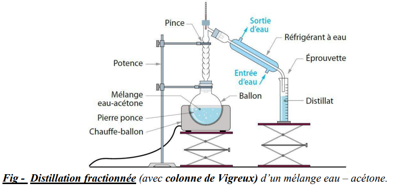
⚗️ Animation 1 — Ajout d'un réactif
PCCL · Observer le déplacement de l'équilibre lorsqu'on ajoute un excès d'alcool ou d'acide.
⚗️ Animation 2 — Élimination d'un produit
PCCL · Observer le déplacement de l'équilibre lorsqu'on élimine l'ester formé.
Ces deux animations illustrent donc les deux mêmes leviers vus en cours pour augmenter le rendement d'une synthèse : l'excès d'un réactif, et l'élimination d'un produit.
Les facteurs cinétiques
Pour augmenter la vitesse de formation d'un produit dans une étape de synthèse, il est possible d'agir sur les facteurs cinétiques : la concentration des réactifs et la température, et/ou d'utiliser un catalyseur.
- Chauffer a un coût énergétique et environnemental important.
- Un catalyseur est régénéré : son coût d'utilisation est nul.
L'agitation
L'agitation (agitateur magnétique) homogénéise la solution et aide à solubiliser les réactifs : elle accélère donc la réaction en favorisant les contacts entre entités réactives.
Le montage à reflux
Le montage à reflux permet d'augmenter la température du milieu sans perte de matière par évaporation. La réaction se déroule à la température d'ébullition du solvant, ce qui entraîne la vaporisation d'une partie des réactifs. Les vapeurs se liquéfient au contact des parois froides du réfrigérant et retombent en gouttelettes dans le milieu réactionnel : il faut récupérer ces vapeurs pour ne pas perdre en rendement. Des grains de pierre ponce régulent l'ébullition.
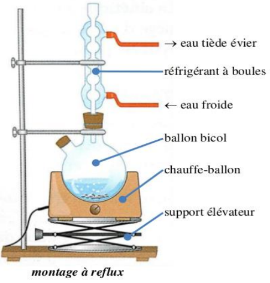
Protocole expérimental
- Dans un ballon bicol, introduire 0,20 mol d'acide éthanoïque et 0,24 mol d'alcool isoamylique (léger excès par rapport à l'acide).
- Ajouter avec précaution quelques gouttes d'acide sulfurique concentré.
- Ajouter quelques grains de pierre ponce, puis adapter un montage à reflux muni d'un Dean-Stark permettant d'éliminer l'eau formée au fur et à mesure de sa formation.
- Chauffer à reflux pendant 45 minutes sous agitation magnétique.
- Laisser refroidir le mélange réactionnel à température ambiante.
- Verser le mélange dans une ampoule à décanter contenant de l'eau glacée, agiter puis laisser décanter.
- Récupérer la phase organique, la laver avec une solution saturée d'hydrogénocarbonate de sodium puis à l'eau distillée.
- Sécher la phase organique sur sulfate de magnésium anhydre, puis filtrer.
À retenir : seules les opérations qui agissent sur la transformation chimique elle-même (étape 1 de la synthèse) optimisent le rendement ou la vitesse. Les opérations d'extraction, de purification et de sécurité (étapes 2 et 3 d'une synthèse, cf. partie A.1) n'ont pas cet effet.
Mécanisme réactionnel et intermédiaire réactionnel
Une réaction complexe peut être décomposée au niveau moléculaire en étapes (ou actes) élémentaires : l'ensemble de ces étapes constitue le mécanisme réactionnel. Il permet notamment de rendre compte de la loi de vitesse établie expérimentalement.
Un intermédiaire réactionnel est une espèce chimique formée au cours d'une étape élémentaire, puis consommée au cours d'une étape ultérieure.
Établir l'équation de la réaction à partir du mécanisme
L'équation de la réaction modélisée par un mécanisme réactionnel s'obtient en faisant le bilan de tout ce qui est consommé et produit au cours des différentes étapes : on l'écrit en additionnant les étapes du mécanisme (les intermédiaires réactionnels et le catalyseur régénéré s'éliminent de part et d'autre).
Sites donneur et accepteur de doublet d'électrons
- Un site donneur de doublet d'électrons est un site de forte densité électronique, portant une charge partielle δ− (ou une charge négative, ou un doublet non liant).
- Un site accepteur de doublet d'électrons est un site de faible densité électronique, portant une charge partielle δ+ (ou une charge positive).
On modélise le déplacement d'un doublet d'électrons lors d'une étape d'un mécanisme réactionnel par une flèche courbe qui part d'un site donneur de doublet d'électrons et qui pointe vers un site accepteur de doublet d'électrons.
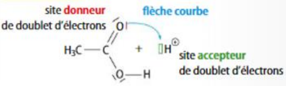
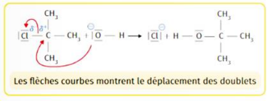
① Bromation d'un alcène — addition électrophile
Équation générale : C=C + Br2 → C(Br)–C(Br)
Mécanisme en 2 étapes :
- Étape 1 — le doublet π de la double liaison C=C (site donneur) attaque l'atome de brome le plus proche de Br2 (site accepteur) ; le doublet de la liaison Br–Br part vers l'autre atome de brome, qui devient l'ion bromure Br−. Il se forme un ion bromonium (intermédiaire réactionnel, cycle à 3 atomes chargé positivement).
- Étape 2 — l'ion bromure Br− formé (site donneur, doublet non liant) attaque l'un des carbones de l'ion bromonium (site accepteur), ce qui rouvre le cycle et donne le dérivé dibromé.
② Hydratation d'un alcène en milieu acide — addition électrophile
Équation générale : C=C + H2O →(H3O+) C(H)–C(OH)
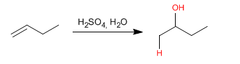
Mécanisme en 3 étapes :
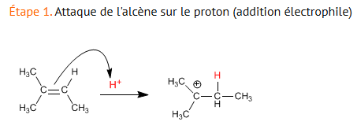
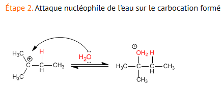
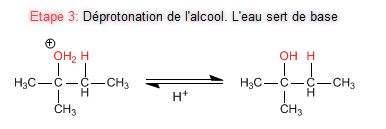
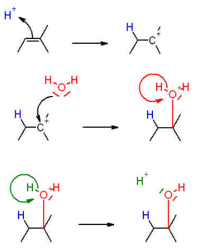
▶ Voir l'animation étape par étape (Ostralo)
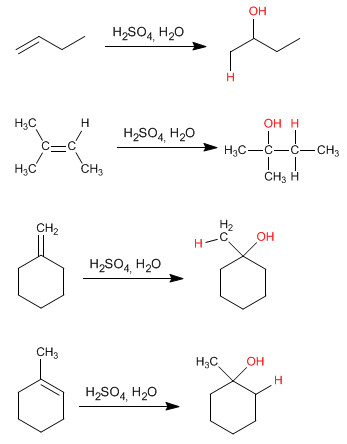
③ Synthèse d'un éther en milieu basique — substitution nucléophile (type Williamson)
Équation générale : R–O− + R'–X → R–O–R' + X−
Mécanisme en 1 étape (réaction élémentaire) :
- Un doublet non liant de l'ion alcoolate R–O− (site donneur) attaque le carbone porteur de l'halogène de l'halogénoalcane R'–X (site accepteur, δ+) ; simultanément, le doublet de la liaison C–X part vers l'atome X, qui devient l'ion halogénure sortant X−.
- Cette réaction ne fait pas apparaître d'intermédiaire réactionnel : les deux mouvements de doublets sont simultanés (mécanisme concerté).
Étape 2 : carbocation + H2O → alcool protoné (oxonium)
Étape 3 : alcool protoné + H2O → alcool + H3O+
Choc efficace
Un choc entre deux entités réactives est dit efficace s'il entraîne une modification des liaisons chimiques de ces deux entités (formation et/ou rupture de liaisons).
🌡️ Effet de la température
Lorsque la température augmente, l'agitation thermique des entités augmente : les chocs entre entités des réactifs sont plus fréquents et plus violents. Par conséquent, les chocs efficaces sont plus fréquents.
🧪 Effet de la concentration
Lorsque la concentration des réactifs augmente, il y a plus d'entités par unité de volume : les chocs entre entités des réactifs sont plus fréquents. Par conséquent, les chocs efficaces sont plus fréquents.
Une séquence réactionnelle
Une séquence réactionnelle (ou synthèse multi-étapes) est une suite de réactions chimiques permettant la synthèse d'une molécule cible à partir de réactifs. Chaque étape peut inclure une modification de groupe caractéristique, de chaîne carbonée, ou une polymérisation. On peut aussi classer chaque étape selon le type de transformation subie par la molécule.
Caractériser une transformation
Une transformation chimique peut être caractérisée soit par le couple mis en jeu (oxydoréduction, acide-base), soit par la comparaison du nombre de liaisons simples entre le substrat et le produit (addition, élimination), soit par le devenir d'un atome ou groupe d'atomes (substitution).
Oxydoréduction
Couple oxydant1/réducteur1 : transformation de l'oxydant 1 en réducteur 1 (ou du réducteur 1 en oxydant 1).
Acide-base
Couple acide1/base1 : transformation de l'acide 1 en base 1 (ou de la base 1 en acide 1).
Addition
Un ou des atome(s) du produit possède(nt) plus de liaisons simples que dans le substrat.
Élimination
Un ou des atome(s) du produit possède(nt) moins de liaisons simples que dans le substrat.
Substitution
Un atome ou groupe d'atomes du substrat est remplacé par un autre atome ou groupe d'atomes dans le produit.
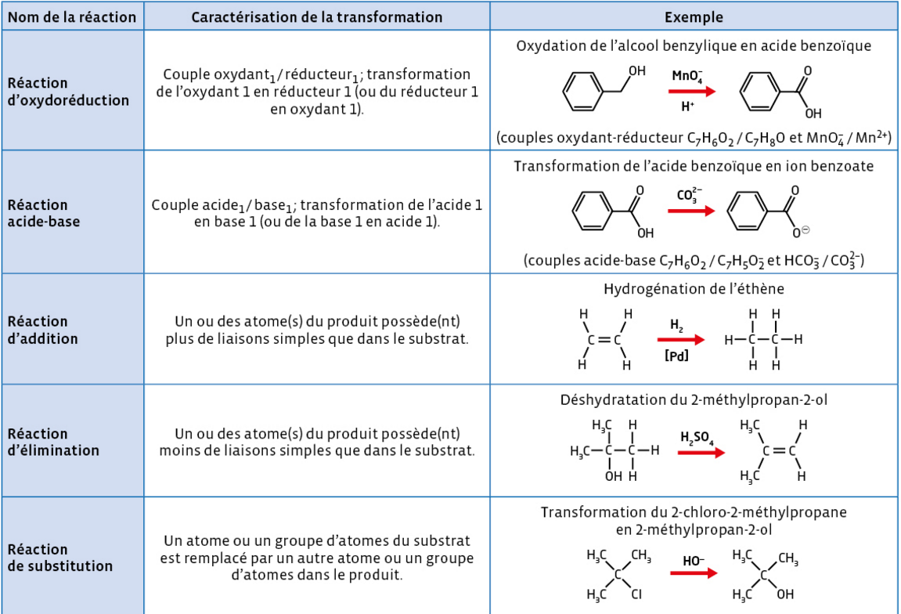
Exercice à trous — Compléter les définitions (addition, élimination, substitution)
Une substitution est une réaction chimique au cours de laquelle un atome ou groupe d'atomes, groupe sortant, est
par un autre, groupe entrant.
Une addition est une réaction chimique au cours de laquelle deux atomes ou groupes d'atomes viennent se
sur des atomes initialement liés par une liaison multiple, sans
d'autres groupes d'atomes.
Une élimination est une réaction chimique au cours de laquelle deux atomes ou groupes d'atomes portés par des atomes voisins sont
d'une molécule sans
d'autres groupes ; il se forme alors une liaison
.
Substitution : C–X + Y → C–Y + X.
Addition : C=C + X–Y → CX–CY.
Élimination : CX–CY → C=C + X–Y.
Banque de réactions disponibles
- A. Addition électrophile d'eau sur un alcène, catalysée par H3O+ (règle de Markovnikov) → alcool secondaire
- B. Substitution nucléophile d'un ion hydroxyde sur un dérivé halogéné → alcool
- C. Oxydation ménagée d'un alcool secondaire par les ions dichromate en milieu acide → cétone
- D. Réduction d'une cétone par le borohydrure de sodium NaBH4 → alcool secondaire
- E. Estérification d'un alcool par l'acide éthanoïque, catalyse acide, chauffage à reflux → ester + eau
- F. Élimination d'eau (E1) d'un alcool en milieu acide chauffé → alcène
- G. Addition électrophile de HBr sur un alcène (règle de Markovnikov) → dérivé bromé
- H. Hydrolyse basique (saponification) d'un ester par HO− → ion carboxylate + alcool
- I. Protection sélective d'un groupe hydroxyle par estérification avec l'anhydride éthanoïque → ester protecteur
- J. Déprotection par hydrolyse acide de l'ester protecteur → groupe hydroxyle régénéré
- K. Réaction acide-base : acide carboxylique + hydrogénocarbonate de sodium → ion carboxylate + CO2 + eau
Pourquoi pas les autres réactions ?
- B nécessite un dérivé halogéné au départ, absent ici.
- D est l'inverse de l'étape recherchée (réduction, pas oxydation).
- E conduirait à un ester, pas à une cétone (voir synthèse 2).
- F est l'inverse de l'étape 1 (élimination, pas addition).
- G, H, I, J, K ne correspondent à aucune transformation utile ici (pas d'alcool à protéger, pas d'ester ni d'acide carboxylique en présence).
Le piège à éviter : l'étape 2 n'est pas C (oxydation) — l'oxydation donnerait une cétone (synthèse 1), pas un ester. Il faut bien reconnaître le groupe caractéristique de la molécule cible (ici un ester) pour choisir la bonne réaction finale.
Sans l'étape de protection, l'oxydation (C) aurait transformé les deux groupes hydroxyle en groupes carbonyle, ce qui n'est pas le produit recherché.
Polymère, monomère et motif
Un polymère est une macromolécule formée de l'assemblage de motifs chimiques identiques liés en chaîne. Il est le résultat de la polymérisation de molécules monomères. On représente un polymère en écrivant le motif entre deux crochets ou parenthèses, en notant en indice le nombre N (ou n) de répétitions du motif.
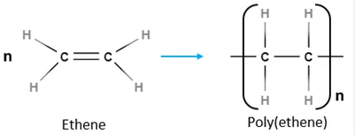
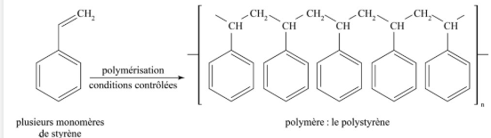
Application — Polymère de degré 4 du 2-méthylprop-1-ène
Le 2-méthylprop-1-ène a pour formule semi-développée CH2=C(CH3)2. Représenter le motif de son polymère, puis le polymère de degré 4 (N = 4).
Motif (obtenu en ouvrant la liaison double C=C, chaque carbone gardant ses substituants) : –[CH2–C(CH3)2]–
Polymère de degré 4 (N = 4) : on répète 4 fois ce motif relié bout à bout :
–CH2–C(CH3)2–CH2–C(CH3)2–CH2–C(CH3)2–CH2–C(CH3)2–
On peut aussi le noter, de façon condensée : –[CH2–C(CH3)2]4–
L'image représente 5 motifs pour illustrer la répétition, mais dans le polymère réel, ce nombre n (degré de polymérisation) est bien plus grand — de l'ordre de plusieurs milliers.
Composé polyfonctionnel
Un composé polyfonctionnel porte plusieurs groupes caractéristiques qui peuvent réagir simultanément avec un même réactif.
Stratégie de protection / déprotection
Pour privilégier la réaction de l'une des fonctions d'un composé bifonctionnel, on peut choisir un réactif chimiosélectif, ou empêcher qu'un réactif non chimiosélectif réagisse sur l'autre fonction.
Une étape de protection est la création d'un groupe protecteur sur l'une des fonctions d'un composé polyfonctionnel afin de bloquer sa réactivité. Après action du réactif sur la fonction non protégée, on réalise l'étape de déprotection de la fonction. La séquence réactionnelle est donc allongée de deux étapes.
- Le groupe protecteur doit se former de façon sélective avec la fonction à protéger.
- Il doit être stable lors des étapes suivantes.
- Il doit être facile à enlever une fois la transformation terminée.
Protection, oxydation et déprotection du 3-hydroxybutanal
Pour empêcher la fonction hydroxyle du 3-hydroxybutanal d'être oxydée par les ions permanganate, on forme au préalable un groupe ester protecteur, grâce à une réaction avec l'acide éthanoïque.
① Protection
3-hydroxybutanal + acide éthanoïque → formation du groupe ester protecteur sur la fonction hydroxyle.
② Oxydation
MnO4− oxyde uniquement l'aldéhyde (non protégé) en acide carboxylique ; le groupe ester protège l'ancien hydroxyle.
③ Déprotection
Hydrolyse du groupe ester : on retrouve la fonction hydroxyle, tandis que la fonction oxydée (carboxyle) est conservée.
On obtient finalement l'acide 3-hydroxybutanoïque : seule la fonction aldéhyde a été oxydée, la fonction hydroxyle ayant été protégée puis restaurée.
Une synthèse écoresponsable
Une synthèse écoresponsable doit utiliser des procédés chimiques permettant de réduire ou d'éliminer l'utilisation et la production de substances dangereuses. Ce type de synthèse doit respecter les 12 principes de la chimie verte, énoncés par les chimistes américains Paul Anastas et John C. Warner en 1998.
- Catalyseurs — diminuent la consommation d'énergie, augmentent la sélectivité, réduisent les quantités de réactifs.
- Réactifs — doivent être les moins toxiques possible pour l'environnement.
- Solvants verts — facilement récupérables, recyclables, faiblement toxiques, tout en conservant vitesses de réaction et rendements.
| Critère | Voie A | Voie B |
|---|---|---|
| Rendement | 68 % | 91 % |
| Solvant utilisé | dichlorométhane (toxique, CMR suspecté) | éthanol (peu toxique, biosourcé) |
| Catalyseur | aucun | acide sulfurique (catalytique, régénéré) |
| Température / durée | 110 °C pendant 6 h | 78 °C (reflux) pendant 1 h |
| Nombre d'étapes | 4 (dont 1 protection/déprotection) | 2 |
| Sous-produits | non valorisés, rejetés | eau uniquement |
La voie A n'est pas nécessairement à écarter dans l'absolu (elle peut être choisie pour d'autres raisons, ex. disponibilité des réactifs), mais du point de vue strict de la chimie verte, la voie B est clairement préférable.
Partie A.1 – Extraction & identification
- Solide : filtration Büchner, lavage au solvant glacé, séchage
- Liquide : extraction par solvant à l'ampoule à décanter, séchage, élimination du solvant
- Identification solide : température de fusion (banc Kofler)
- Identification liquide : densité, T° ébullition, indice de réfraction
Partie A.2 – Rendement r = nf/nmax
- Réactif en excès → déplacement d'équilibre → r augmente
- Élimination d'un produit formé → Qr < K en permanence → réaction totale, r = 1
- Distillation fractionnée : élimine le produit le plus volatil
Partie A.3 – Contrôle de la vitesse
- Facteurs cinétiques : concentration, température ; catalyseur
- Catalyseur préférable à T↑ : coût énergétique nul (régénéré)
- Agitation : homogénéise et solubilise
- Reflux : chauffe sans perte de matière par évaporation
Partie B.1/B.2 – Mécanisme & chocs
- Intermédiaire réactionnel : formé puis consommé
- Catalyseur : consommé puis régénéré, modifie le mécanisme
- Flèche courbe : part d'un site donneur (δ−) vers un site accepteur (δ+)
- T↑ et/ou [X]↑ → chocs plus fréquents → chocs efficaces plus fréquents
Partie B.3 – Types de réaction & polymères
- Oxydoréduction : transfert d'électrons entre 2 couples ox/réd
- Acide-base : transfert de proton entre 2 couples acide/base
- Addition : plus de liaisons simples que dans le substrat
- Élimination : moins de liaisons simples que dans le substrat
- Substitution : un groupe sortant remplacé par un groupe entrant
- Polymère = motifs répétés (N fois) issus de monomères
Partie B.4/B.5 – Protection & chimie verte
- Protection/déprotection : assure la sélectivité sur composé polyfonctionnel
- Groupe protecteur : sélectif, stable, facile à enlever
- 12 principes de la chimie verte (Anastas & Warner, 1998)
- Catalyseurs, réactifs et solvants moins toxiques : synthèse écoresponsable
Rendement (r)
Quotient entre la quantité de matière finale de produit obtenu et la quantité maximale théorique (r = nf/nmax).
Catalyseur
Espèce chimique consommée puis régénérée au cours d'un mécanisme réactionnel ; elle accélère la transformation sans modifier l'état final.
Intermédiaire réactionnel
Espèce chimique formée puis consommée au cours d'un mécanisme réactionnel ; elle n'apparaît pas dans l'équation bilan.
Mécanisme réactionnel
Suite d'étapes (actes) élémentaires qui décrit, au niveau moléculaire, comment se déroule une réaction complexe.
Acte élémentaire
Étape unique d'un mécanisme réactionnel, au cours de laquelle un ou plusieurs doublets d'électrons se déplacent.
Site donneur / accepteur de doublet
Site de forte densité électronique (δ−) qui cède un doublet, ou site de faible densité électronique (δ+) qui l'accueille ; relié par une flèche courbe.
Chimiosélectif
Se dit d'un réactif qui ne réagit que sur une seule fonction d'un composé polyfonctionnel, sans affecter les autres.
Groupe protecteur
Groupe formé sur une fonction pour bloquer temporairement sa réactivité ; il doit être sélectif, stable, et facile à enlever (déprotection).
Addition / Élimination / Substitution
Trois types de réactions caractérisés par la comparaison du nombre de liaisons simples (addition : plus ; élimination : moins) ou par le remplacement d'un groupe (substitution).
Polymère / Monomère
Macromolécule formée par répétition d'un motif (polymère), issue de l'assemblage de petites molécules appelées monomères.
Chimie verte
Ensemble de 12 principes (Anastas & Warner, 1998) visant à réduire l'impact environnemental d'une synthèse chimique.
Montage à reflux
Dispositif permettant de chauffer un milieu réactionnel à ébullition sans perte de matière, grâce à la condensation des vapeurs par un réfrigérant.
▶ Vidéo — Capsule Stratégie de synthèse
Physique Chimie · Introduction à l'optimisation d'une synthèse
▶ Vidéo bilan animée
Hatier · Schéma animé de synthèse de la séquence
▶ Vidéo — Synthèse organique : cours complet
Nomenclature, familles fonctionnelles, formules topologiques, polymères, rendement, reflux, stratégie de synthèse — révision globale de la séquence.
▶ Vidéo — Stratégie de synthèse organique
Synthèse multi-étapes, banque de réactions, addition/élimination/substitution, protection — révision globale de la partie B.
⚗️ Mécanismes réactionnels (3 exemples)
Ostralo · Bromation, hydratation, synthèse d'éther — Partie B.1
⚗️ Bromation d'un alcène
Ostralo · Addition électrophile, ion bromonium intermédiaire
⚗️ Hydratation d'un alcène
Ostralo · Addition électrophile en milieu acide, carbocation intermédiaire
⚗️ Synthèse d'un éther en milieu basique
Ostralo · Substitution nucléophile de type Williamson
📝 QCM de prérequis
Hatier-clic · Vérifier ses acquis avant d'aborder la séquence
📝 QCM de maîtrise des notions
Hatier-clic · Faire le point sur l'ensemble de la séquence